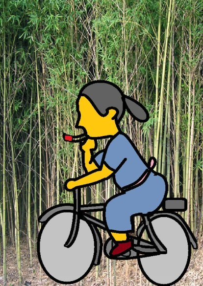

| ②産婆のお冨さん | |
| 深川龍 | |
| (2016) | |
第二話
シシキ道のそばに竹やぶがあった。元々、ここは松林で冬になると村人たちが風呂を沸かすのに使う枯れて落ちた松葉をかき集めに来る所じゃった。それが十数年前の大風で松の木がたくさん倒れてからとんと村人も来なくなって竹藪になった。
竹藪の中の倒れた松の根が腐ってその跡に四、五寸大の穴がぽこぽこ あいておった。穴の中にタヌキの親子が住んでおった。
親ダヌキはあのマンジュウ屋に化けてギンベェさんに馬フンを売りつけた奴じゃったそうな。奴はギンベェさんのかみさんに助けられてからすつかり改心しておったげな。酒良にも現れなくなったそうじゃから、大好きな酒もやめておったのじゃろう。
三重縣朝明郡榊村にお冨さんという産婆さんがおった。産婆というのはお婆さんが多いがお冨さんは末っ子で母親の産婆を継いだのでまだ若かった。
お冨さんは自転車のペダルをふみながら、片手で紙巻きタバコを自慢げに吹かしながらやってくるんじゃがいつもタヌキの穴の前に火がついた吸いガラを捨てるんじゃった。

ちょっと前の、あれは乾いた風が吹く寒い日の朝じゃった。タヌキの親子が気づいて消し止めたから良かったものの、その時は周囲の枯れ草に燃え移って、もう少しで山火事になるところじゃった。
その日も竹やぶは乾いた風にしなりながらさわがしい声を出しておった。
シシキ道は竹やぶのところで曲がりくねっておって先が見えないのに、お富さんはいつものように片手で紙巻きタバコを吹かしながらペダルをこいで来る。
反対方向からも村の小学校の校長先生がやつぱり急いでペダルをこいで来る。自転車の少ない時代じゃ。村で自転車に乗るのは小学校の校長先生と産婆 のお富さんだけじゃった。産婆のお富さんも小学校の校長先生もまさか、反対方向からめったに来ない自転車が来るとは思わなんだ。
案の定、ちょうど曲がった所でぶつかることになったのじゃ。校長先生はお富さんの自転車を見るや、とっさにきぃーっ と急ブレーキをかけて、直前でとまった。ところが、お富さんの方は右手の人差し指と中指の間に紙巻きタバコをはさんで、片手運転をしておったから止まれない。そのままのいきおいで校長先生の自転車にぶつかっていった。
校長先生がふっとび、その上にお富さんが落下した。お富さんは校長先生の体の上で一回バウンドすると、いきおい余ってころころ と枯れ草の上に転がった。
「あーら、ごめんなさい。」
お富さんは真つ赤な顔になって立ち上がった。
「いゃあ、おケガは。」
やせっぽちの校長先生はお富さんの体重につぶされておって起き上がれない。お富さんは校長先生を引っ張り起こした。
「僕が悪いんです。急いでいたもんですから。」
校長先生は頭をかいて決まり悪そうに笑った。校長先生は旧制の富田中学校を卒業しいたので若くして校長になれたんじゃった。
「あら、良いんですの。｣
お富さんはもう品をつくって、すまし顔になっておった。
近くの穴で隠れて聞いていたタヌキは"何が良いんですの"だと思った。だって、お富さんがすっていた火のついたタバコがタヌキの穴の前まで飛んできたんじゃ。しかも、それが枯れ草の近くへころころ と転がっていった。タヌキは気が気でないが、二人に気づかれると困るのですぐに穴からはい出して行くことも出来なんだ。
校長先生は自転車に乗ろうとしたがたおれた拍子にチェーンが外れてしもうて、もたもた しておった。お富さんの方もたおれた拍子に自分の自転車のハンドルが曲がってしまったので真つすぐに直そうとして前輪を股にはさんで力を入れておったのでタバコのことなど気にしていなかった。
二人がそうこうしているうちに、あおるようなつむじ風に吹かれて枯れ草の中を左右に転がっておったタバコの火が一所にとどまると、ついに枯れ草に燃えうつったのじゃった。
「あらっ、何か変なにおいがしますわ。」
それは枯れ草の燃えるにおいじゃった。タヌキ穴の前
の枯れ草からぱっと炎があがった。
「あっ、火事だ。」
二人は近くの木の枝を折ってたたくやら、靴 でぱたぱた とふみつけるやらして、ようやく火を消し止めた。
「危なく大火事になるところでしたわね。」
校長先生は学校の方角に、お富さんは妊婦 の家の方角に、それぞれ行ってしまった。タヌキの親子は穴から出て、やれやれと胸をなでおろしこげた枯れ草の上を歩いてみた。親子の足の裏はこげた枯れ草でまっ黒になってしもうた。ここそこに草の実がおいしそうにはぜておったから、子ダヌキたちはむじゃきにそれをひろって食べた。
焼け跡の地面はまだ温くとかったが、もう、火は大丈夫じゃった。しかし、このままではお富さんの投げ捨てるタバコの火で、この辺りがいつ火事になることやら心配じゃった。
タヌキはあれから人をたぶらかせたことはない。ギンベェさんのかみさんとかたく約束したことじゃったからのう。しかし、タヌキはこの約束を破っても、ここいらでお富さんを少しこらしめておくべきじゃと考えた。
産婆は夜中でも妊婦が産気づけばその家に行かねばならぬ。夜になると、お富さんの自転車のハンドルの前に油紙をはり付けたガン灯が下げてあるのはそのためじゃった。ガン灯というのはロウソクなどを使ったチョウチンのようなもんじゃが、前方だけをてらすので、今で云えば懐中電灯のようなもんじゃ。
真冬の北風が吹く夜じゃった。北風が雨戸をかたかた 云わせるのにまじって。とんとん と出入り口の戸をたたく者がおった。お富さんは昼間にみてやった隣村の妊婦が産気づいたのじゃろうと思うた。そこで戸口に向かって大きな声を出した。
「へえっ、分かりましたわな。今、したくをして、さっそく、行きますでなぁ。」
お富さんは女の一人住まいじゃったから、男衆は気を使って、戸口から声をかけるだけで、家の中に入らん。戸をたたく音が止んだ。お富さんの返事を聞いて、男は安心してもどったようじゃった。
お富さんは赤いタスキや白い上つばりを風呂敷 に包んだ。巻タバコとマッチをたもとに入れると、ぞうりをはいた。風呂敷包みを自転車の後の荷台にひもでしっかりゆわえると、自転車にまたがった。
北風の吹く日に自転車をこぐのは大変じゃった。途中でつかれて、きゅうけいすることにした。神社の灯ろうに小さな明かりがついておった。お富さんは自転車からおりると灯ろうの明かりをたよりにたもとからタバコを出して、風を防ぎながらマッチで火をつけた。
一本すうと、物足りなくて、もう一本すった。そして、三本目は口にくわえて、自転車に乗った。お富さんのふむペダルに合わせて自転車のハンドルの前に下げたガン灯が左右におおきくゆれて、暗くなったり明るくなったりしておった。そして、お富さんがくわえたタバコの赤い火先も螢の光のように強くなったり弱くなったりして、やみの中を流れていったもんじゃった。
すっておったタバコが短くなったので、お富さんはぷいっ とそれを道ばたにはき捨てた。きっと妊婦がおなかを痛めて待っておるに違いない。急がなくてはと、ペダルに力を入れた。風のせいか、力を入れるわリに前へ進まない。
ふっと見ると、自分が乗っている自転車のとなりではき捨てたタバコが赤い火先を燃やしながら転がっておった。しかも、ごていねいに、神社で吸った一本目のも、二本目のも追っかけてくるんじゃ。
お富さんは気味が悪いわと思いながら一生けんめいにこぐ。となりを転がる三つのタバコの火はだんだんと大きくなる。始めはこぶしぐらいの大きさじゃった。そのうちに太股ぐらいになった。お富さんは必死でこぐ。や
がて、手おけ ぐらいになり、シシキ道までくると、ついにたらい ほどになって、真つ赤に焼けた火が左右からお富さんの自転車をはさむようにせまってきた。
夜空から大きな声が聞こえた。
「タバコの火は火事の元じゃ。」
「きゃっ、助けて、助けて。」
お富さんの叫び声を聞いたのは酒良から一杯きげんでもどる途中のギンベェさんじゃった。
ギンベェさんは途中の木の枝にハンドルを引っかけて一生けんめいにペダルを空回ししているお富さんに声をかけた。
「何してなさるね。」
ギンベェさんは持っているチョウチンをお富さんに近づけて、けげんな顔をした。
「もう、火がついたタバコの投げ捨てはしないからゆるして。」
お富さんは一人でさわいでおった。
「ははん、また、タヌキの悪さだな。こらっ、出てこい。タヌキ汁にするぞ。」
また、酒良からの帰りに通りかかったギンベェさんの声でお富さんは正気にもどった。大きな親ダヌキと小さな二匹の子ダヌキがこそこそ としげみのやみにかくれていった。
お富さんは間もなく妊婦の家に着いた。じゃが、妊婦はまださしせまっている様子ではなかった。
「あんなに、とんとん と戸をたたいたじゃないの。だから、急いで来たのに。」
妊婦の家では産婆のお富さんがあまりにも早く来たのでおどろいておった。
「いいや、わしはたたいてねぇです。
これからぼつぼつ 行こうかと思っていたところじゃから。｣
「じゃ、誰がたたいたって云うの。」
「きっと、タヌキの奴の仕業に違いねえ。」
そんなことがあってから、お富さんはタバコの火の投げ捨てをしなくなったんじゃが、タヌキの親子もタヌキの穴からいなくなってしまったんじゃ。タヌキはかみさんとの約束をやぶったから、シシキ道の穴には住めないと思ったのじゃろうか。
「あの翌日は白い雪がまっておったから、とんとん と出入り口の戸をたたいたのはタヌキではなくて雪起こしの風じゃったにちがいない。あのタヌキが悪さをする筈がないわさ」
タヌキのことをギンベェさんのかみさんはいつまでもそんなふうに言うて、かばっておったもんじゃ。
（完）
深川龍
の
ふしぎシリーズ④③
も
お読みください。
。